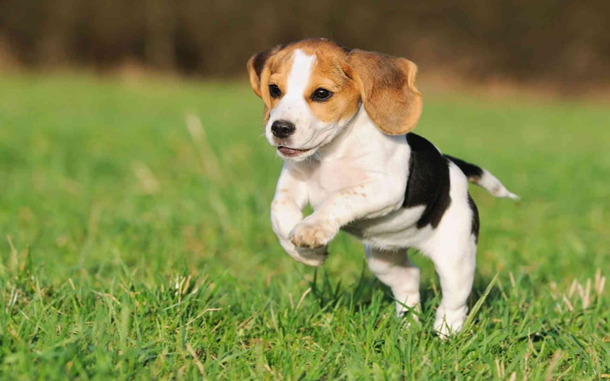
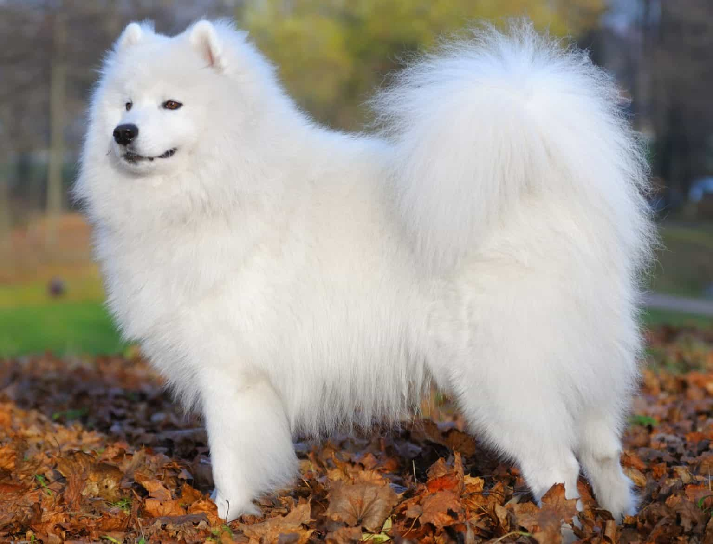
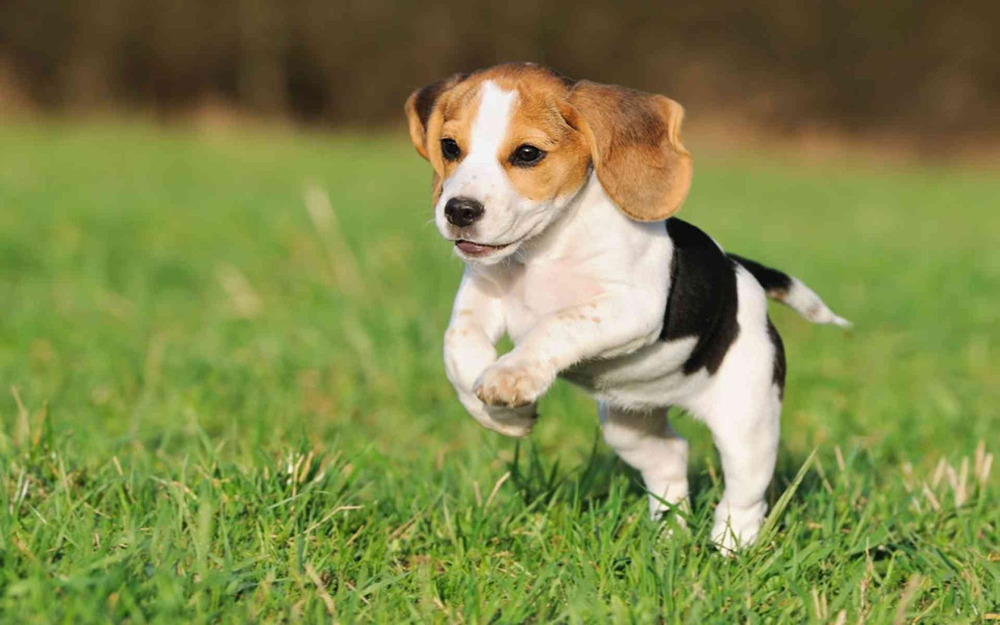
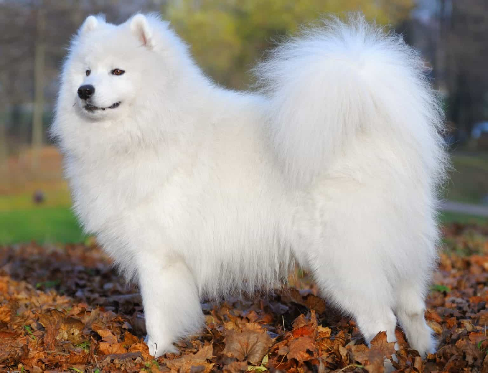

- Noir et feu
- Rubis
- Blenheim
- Tricolore


- Uni (blanc)
- Bicolore (blanc et sable)
- Tricolore (blanc, noir et marron)

- Blanc pur
- Crème
- Biscuit
| Numero | Nom | Robe | Caractère | Région |
|---|---|---|---|---|
| 1 | Cavalier King Charles |
|
Affectueux |
Angleterre
|
| 2 | Beagle  |
|
Amical | |
| 3 | Samoyède  |
|
Russie |
|
| Numero | Nom | Robe | Caractère | Région |